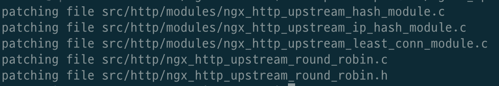
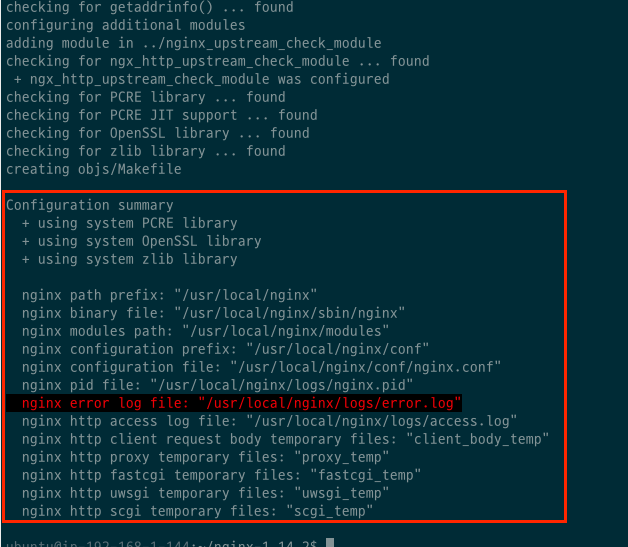
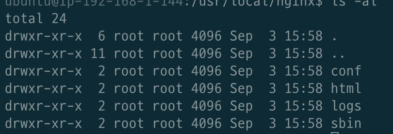
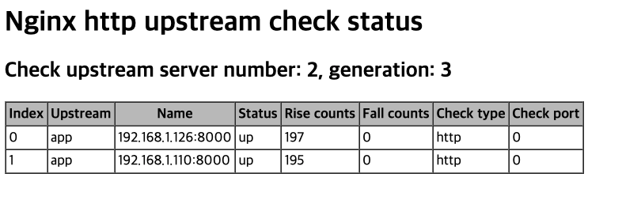

NGINX 로드 밸런싱 (무료 헬스체크를 곁들인)
목차
들어가며
NginX는 대표적으로 리버스 프록시와 로드 밸런서 역할을 담당할 수 있는 웹 서버이다.
로드 밸런싱을 구현하면 꼭 같이 구성해야하는 기능이 있다. 바로 ‘헬스 체크’다.
‘헬스 체크’란 간단히 말하면 로드 밸런싱 서비스를 제공하는 다수의 서버의 상태를 점검하기 위한 기술이다.
쉽게 말해 WAS들의 건강을 체크하는 기술이다.
NginX는 헬스 체크 기능을 간편히 설정할 수 있도록 해준다. 하지만 이 설정을 하기위해선 NginX Plus를 사용해야 하는데.. 바로! 유료버전이다…
여기를 가면 유료버전이라고 나와있다.
대체하는 방법이 있나 서칭해보니 무료로 사용가능한 모듈이 존재했다.
이 글은 NginX에 무료로 사용가능한 헬스 체크 모듈 (nginx_upstream_check_module)를 설치하고 설정하는 방법에 대해서 다룬다.
환경
- Ubuntu 18.14 LTS
- NginX 1.14.2
준비물
로드 밸런싱과 헬스 체크 기능을 테스트하기위해 NginX서버와 두 개의 WAS를 구성해보자.
- NginX 1대
- WAS 2대
본 글은 AWS EC2 기준으로 작성되었습니다. (모든 EC2의 한 VPC안에 존재시키며, Private IP를 통해 통신합니다.)
또한, 각각의 WAS에는 Spring기반의 프로젝트는 실행해둔다. (아무 프로젝트를 실행하면 된다.)
필자는 Spring Petclinic를 사용했다.
NginX 컴파일 설치 with Module
NginX를 쉽게 설치하는 방법으론 자동인스톨(ex apt)와 Docker 컨테이너가 있다. 참고
하지만 위와 같은 방법은 특정 모듈을 같이 설치하지 못한다.
다시 말해, 특정 모듈은 컴파일 설치를 통해서만 설치 가능하다. 헬스 체크 모듈을 사용하기 위해선 NginX를 컴파일 설치해야하는 것이다.
공식 모듈 DOCS는 여기를 참고하세요.
1. 설치 파일 다운로드
헬스 체크 모듈을 깃허브에서 clone해온다.
$ git clone https://github.com/yaoweibin/nginx_upstream_check_module.git
NginX 다운로드 사이트에서 컴파일 버전도 다운받아준다. (본 글에선 1.14.2)
그리고 압축을 풀어준다.
$ wget 'http://nginx.org/download/nginx-1.14.2.tar.gz'
$ tar -xzvf nginx-1.14.2.tar.gz
2. NginX 모듈 path
압축 푼 NginX디렉토리에 들어가서 아래와 같이 헬스 체크 모듈을 patch 해준다. (NginX버전에 맞는 *.patch파일을 설정해주면 된다.)
$ cd nginx-1.14.2/
$ patch -p1 < {$module source directory}/check_1.14.0+.patch
patch 결과
3. 설정하기 위한 의존성 설치
이제 설치하기 위한 configure를 해야한다.
이때 필요한 의존성이 있다.
- PCRE ->
apt install libpcre3-dev- NginX는 Perl5에서 사용하는 정규표현식 라이브러리인 PCRE를 사용한다.
- openssl ->
apt install openssl,sudo apt install libssl-devhttps모듈인HttpSslModule을 사용하기 위해서 설치해줘야 한다.
- zlib ->
apt install zlib1g,apt install zlib1g-devngx_http_gzip_module모듈을 사용하기 위해서 설치하는 zlib 라이브러리.
- 컴파일 ->
apt install make- 경우에 따라
gcc와g++를 설치해야할 수도 있다.
- 경우에 따라
4. 컴파일 설치 전 configure
NginX 소스 디렉토리로 이동하여 configure 명령을 실행한다.
configure의 설정은 공식 문서에서 쉽게 파악할 수 있다.
$ ./configure --add-module={$module source directory} --with-http_ssl_module

설정 결과
5. 컴파일 설치
이제 마지막으로 컴파일 설치를 진행해주면 된다.
$ make
$ make install
이제 /usr/local/nginx를 가면 설치된 nginx를 찾을 수 있다.

- conf: 설정 파일
- html: index와 500에러 관련 html (정적)
- logs: 로그 디렉터리 (기본)
- sbin: nginx 실행 파일 디렉토리
NginX 설정
이제 헬스 체크 모듈을 포함한 NginX를 설치하였으니, 아래와 같이 설정해주면 된다.
worker_processes auto;
events {
worker_connections 1024;
}
http {
include ./mime.types;
log_format main '$remote_addr - $remote_user [$time_local] "$request" '
'$status $body_bytes_sent "$http_referer" '
'"$http_user_agent" "$http_x_forwarded_for"';
access_log ./logs/access.log main;
upstream app {
server 192.168.1.126:8000;
server 192.168.1.110:8000;
check interval=3000 rise=2 fall=5 timeout=4000 type=http;
check_http_send "HEAD / HTTP/1.0\r\n\r\n";
check_http_expect_alive http_2xx http_3xx;
}
server {
listen 80;
location / {
proxy_pass http://app;
}
location /status {
check_status;
access_log off;
}
}
}
로드 밸런싱 및 헬스 체크 설정
upstream app {
server 192.168.1.126:8000;
server 192.168.1.110:8000;
check interval=3000 rise=2 fall=5 timeout=4000 type=http;
check_http_send "HEAD / HTTP/1.0\r\n\r\n";
check_http_expect_alive http_2xx http_3xx;
}
- app이란 이름으로 서버 클러스터 설정.
- 두 대의 WAS로 부하 분산
- 이외에도 로드 밸런싱 설정 공식 문서에서 부하 분산 알고리즘등을 설정해줄 수 있다.
- 헬스 체크
- 3초 단위로 체크, 두 번 성공하면 정상, 5번 실패하면 비정상으로 판단한다. (타임 아웃 4초)
- http 프로토콜 사용
- 서버에 HEAD 메서드, HTTP 1.0을 사용하여 보냄.
- HTTP 응답 코드가 2xx이거나, 3xx라면 정상 상태로 판단.
NginX 실행
$ ./sbin/nginx -t
$ ./sbin/nginx -c ./conf/nginx.conf
-t를 통해 설정 파일을 테스트한다.-c를 통해 설정 파일 위치를 지정해주고 실행해주면 끝!
/status?format=json으로 보내면 json형식으로 반환해준다.

마치며
개인적으론 처음엔 막막했지만.. 그래도 적용시키는 과정에서 리눅스와 NginX에 대해 배울 점이 많아서 좋았습니다!
이제 운영 환경에서 로드 밸런싱에 연결된 WAS들이 잘 운영되고 있는지 한 눈에 확인할 수 있게 되었습니다 :)
참고
- https://github.com/yaoweibin/nginx_upstream_check_module
- https://opentutorials.org/module/384/4511
- https://m.blog.naver.com/sehyunfa/221707853050